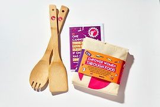

Causing a stir
Dec 7, 2017A brand new product is available in the ECO Mark online shop!
As a fictitious brand, there is no specific product launch planned by ECO Mark. However, I can provide a hypothetical article on what a product launch causing a stir by the brand might look like.
ECO Mark, the sustainable clothing brand known for its eco-friendly and ethical practices, is causing a stir in the fashion industry with its latest product launch. The brand is set to unveil a new line of clothing that promises to revolutionize the way we think about sustainable fashion.
The new line features innovative materials and designs that are both stylish and eco-friendly. From recycled polyester to biodegradable fibers, each piece in the line is carefully crafted to reduce the environmental impact of the fashion industry.
But it's not just the sustainability of the clothing that is causing a stir. ECO Mark's new line also challenges traditional gender norms with its gender-neutral designs. The brand's commitment to inclusivity and diversity is reflected in the range of styles and cuts, designed to fit all body types and genders.
The launch of ECO Mark's new line is a bold move in an industry that has long been criticized for its environmental impact and lack of inclusivity. By offering sustainable and gender-neutral clothing options, ECO Mark is leading the way in creating a more sustainable and equitable fashion industry.
But ECO Mark's commitment to sustainability and inclusivity doesn't stop with its products. The brand is also dedicated to fair labor practices and ensuring that everyone involved in the production process is treated ethically and paid a fair wage.
As consumers continue to demand more sustainable and inclusive options in the fashion industry, ECO Mark is poised to lead the way with its innovative products and practices. The launch of the new line is just the beginning of what promises to be an exciting future for the brand and its commitment to creating a better world through fashion.
About Me
ECO Mark is a Fictitious sustainable clothing brand known for its eco-friendly and ethical practices.
The brand is causing a stir in the fashion industry with its latest product launch.